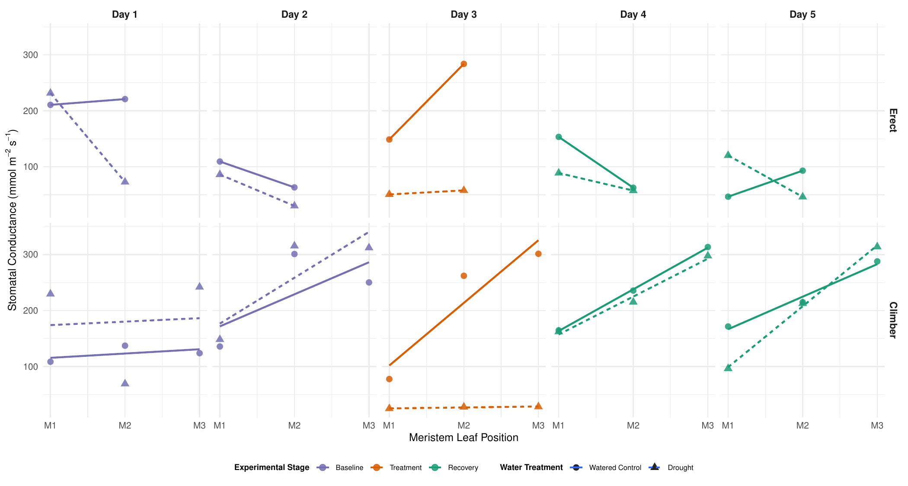
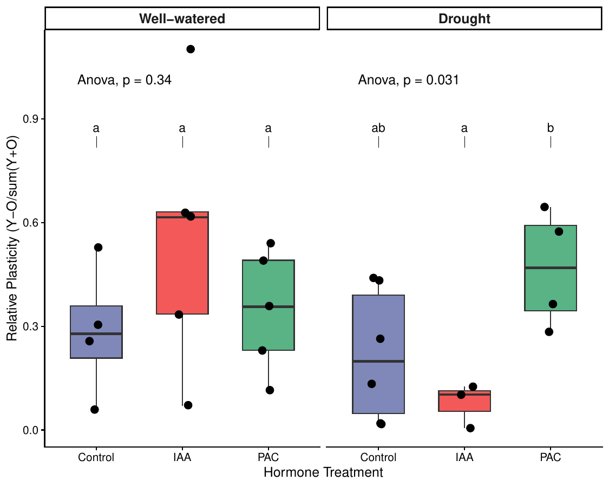
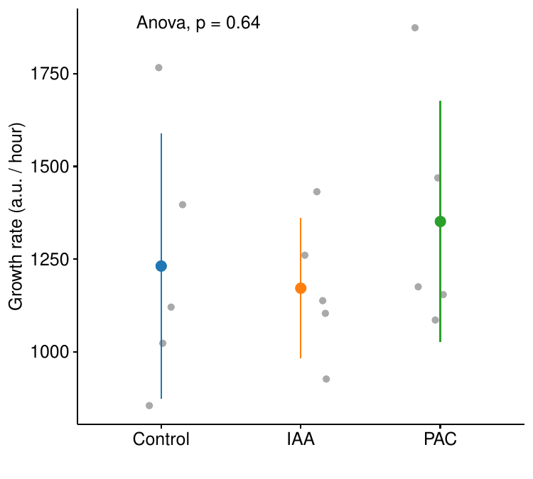
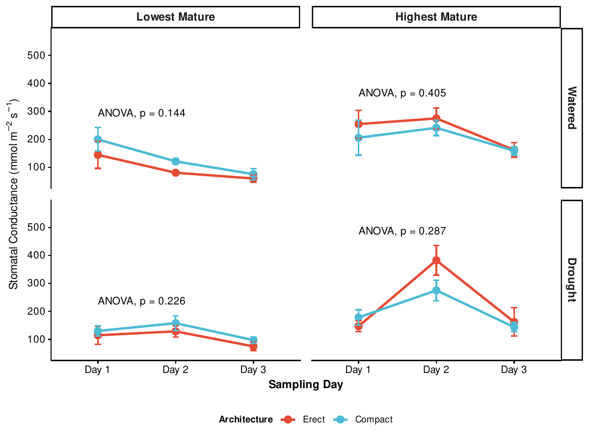
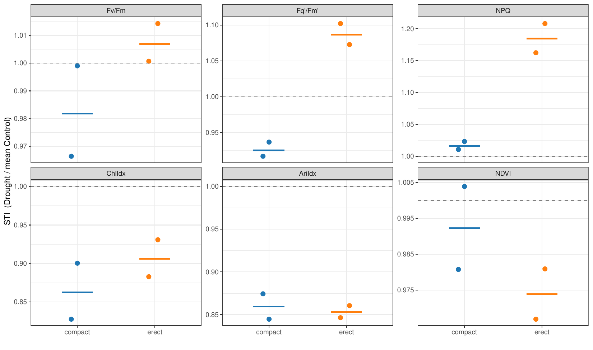

Drought is a major limit on crop productivity, but we still don't understand well how plant architecture relates to water-use efficiency (WUE). This project asked which shoot shapes help plants hold up under water limitation, using tepary bean (Phaseolus acutifolius) and soybean (Glycine max).
I compared stomatal conductance between the highest and lowest mature leaves, changed tepary architecture with hormones (paclobutrazol and IAA), and removed soybean shoot tips to force compact growth, all under well-watered and drought conditions. Measurements came from an SC-1 leaf porometer and the PhenoSight imaging platform (architecture, chlorophyll fluorescence, PSII efficiency).
Preliminary results: compact and prostrate tepary plants did better under drought than erect ones. PAC made plants more compact and shifted water loss toward the highest mature leaves during drought.
I analyzed every experiment in R (tidyverse, ggplot2, lme4, ANOVA and Tukey HSD). The cleaned R Markdown notebooks are linked below.
Exp 01 · Soybean pilot
Does leaf age change how much stomatal conductance drops under drought?
A proof-of-concept run with one droughted and one watered soybean, measured across leaf positions. The pattern hinted that younger leaves keep higher conductance under drought, which set up the replicated tepary experiments.
Developing leaves respond more strongly to drought than mature leaves
Three-week-old erect and climbing tepary plants went through baseline, three days of withheld water, and recovery. I measured stomatal conductance at three leaf positions (M1–M3) and fit a regression for each date.

Stomatal conductance by leaf position (M1–M3) across experimental stages; erect (top) vs. climbing (bottom) plants.
PAC prevents climbing growth and shifts water loss toward young leaves during drought
Tepary plants were sprayed with IAA (auxin), paclobutrazol (PAC, a gibberellin-synthesis inhibitor), or a mock control, then droughted. Under drought, PAC plants had significantly higher relative plasticity than IAA plants (one-way ANOVA p = 0.031, Tukey HSD). PAC kept the highest share of conductance in the youngest leaf (57.1% on average), while IAA shifted toward older leaves (48.1%).

Relative plasticity (young vs. old leaf conductance) by hormone treatment.

PhenoSight growth rate by treatment (ANOVA p = 0.64).
Compact soybeans showed lower conductance and better-maintained photosynthetic efficiency under drought
Removing the shoot tip 21 days after planting produced compact plants, which I compared with intact (erect) controls. I tracked conductance at the highest and lowest mature leaves over three drought days and computed a Stress Tolerance Index (drought ÷ control) for each PhenoSight trait. Sample sizes were small, so treat these differences as suggestive.

Mean stomatal conductance (± SE) by sampling day, architecture, and leaf position.

Stress Tolerance Index for PSII and pigment traits; dashed line = control level.
Stem anatomy with machine learning: a segmentation model to measure tepary stem cross-sections (from Rapid Anatomy Tools imaging) across decapitation, hormone, and drought treatments.
CPlantBox modeling: simulating radial and axial water transport through contrasting shoot and root architectures, with parameters drawn from PhenoSight data.
Pipeline integration: linking anatomy, physiology, and imaging data per plant so anatomical traits map onto hydraulic model parameters.
Acknowledgements
Thank you to Dr. Magda Julkowska and the Plant Architecture Lab, Megan Truesdail and Cristina McGuire, and the Boyce Thompson Institute REU Program. Supported by the NSF and USDA.